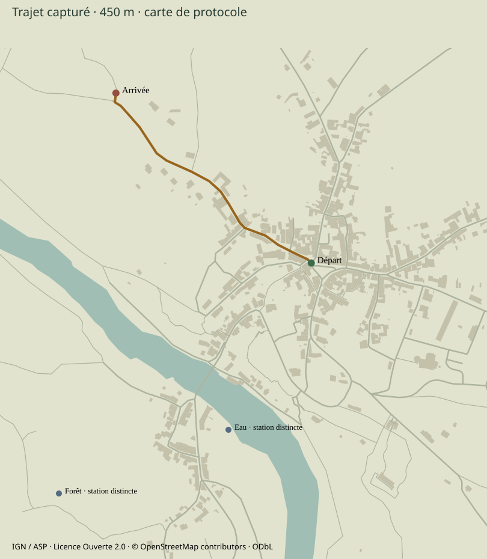
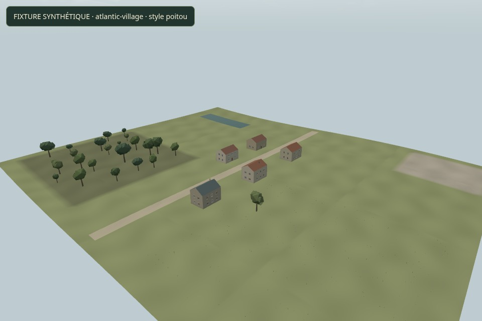
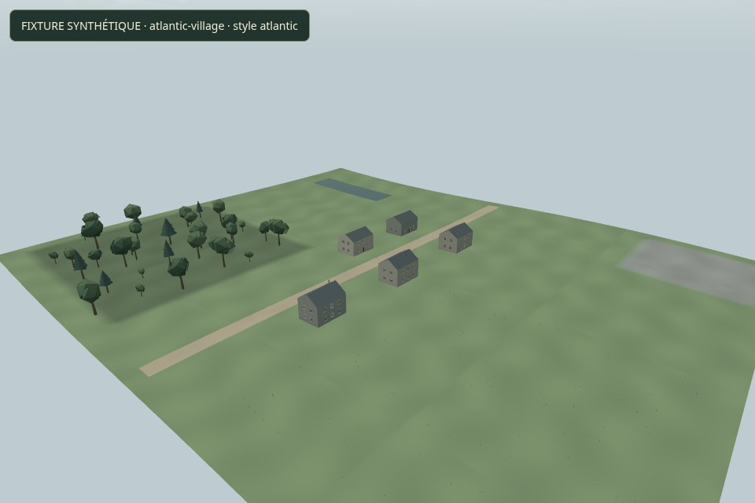
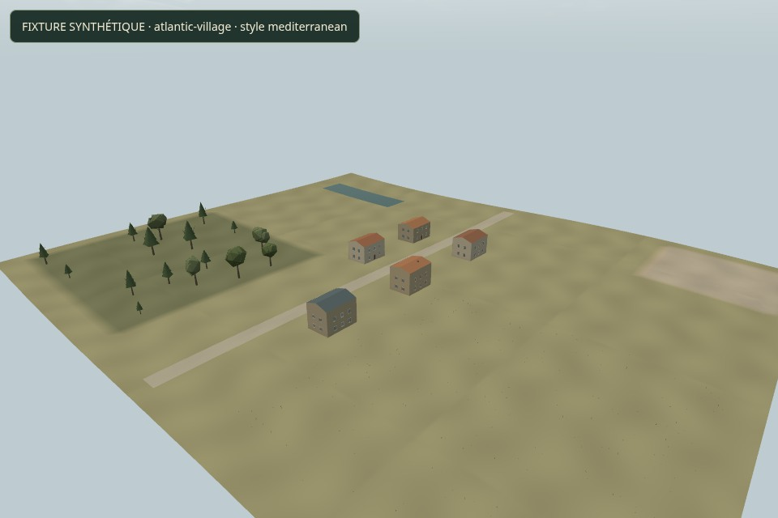
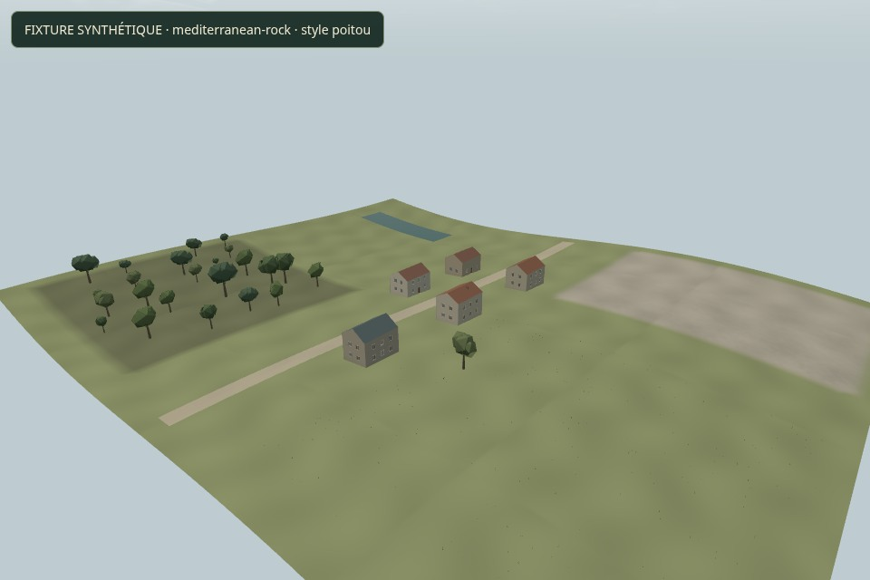
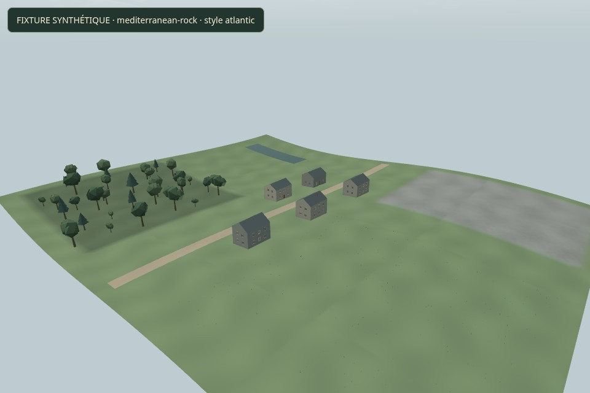
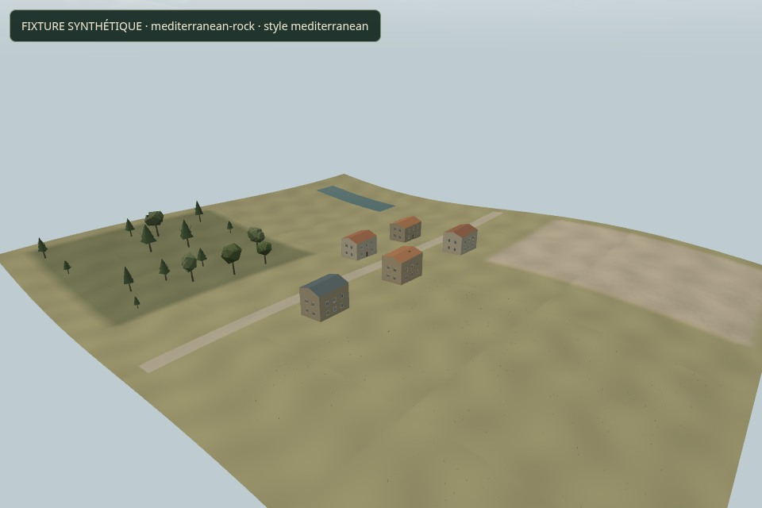

Mission 11 et Mission 12, dans le vrai moteur
Douze comparaisons aux mêmes conditions. La référence Mission 11 vient du commit 83d9258 ; l’étape C vient de 3cd692e. Choisir C permet d’examiner les ajustements d’harmonie de D. Les ruines restent illustratives et les matières inconnues restent des interprétations.
La rue et les façades
Équilibré · 960 × 640 · 2026-06-21T13:57:47.015Z
Caméra et conditions
[-12.277392682727118, -32.416383999943434, 0.65, 0.12, 5, 'third']Mêmes matrices, date, météo, résolution et profil entre versions. Les poses de comparaison sont des diagnostics, distincts du parcours continu enregistré.
Les toitures du village
Équilibré · 960 × 640 · 2026-06-21T13:57:47.015Z
Caméra et conditions
[-12, -30, 0.8, 0.5, 65, 'aerial']Mêmes matrices, date, météo, résolution et profil entre versions. Les poses de comparaison sont des diagnostics, distincts du parcours continu enregistré.
Le promontoire et les ruines
Équilibré · 960 × 640 · 2026-06-21T13:57:47.015Z
Caméra et conditions
[-100, 155, 0.5, 0.5, 110, 'aerial']Mêmes matrices, date, météo, résolution et profil entre versions. Les poses de comparaison sont des diagnostics, distincts du parcours continu enregistré.
Le couvert forestier
Équilibré · 960 × 640 · 2026-06-21T13:57:47.015Z
Caméra et conditions
[-430, 340, 1, -0.12, 0, 'first']Mêmes matrices, date, météo, résolution et profil entre versions. Les poses de comparaison sont des diagnostics, distincts du parcours continu enregistré.
Les détails du sous-bois
Équilibré · 960 × 640 · 2026-06-21T13:57:47.015Z
Caméra et conditions
[-426.72308821603656, 346.51291632745415, 0.7853981633974483, 0.48, 0, 'first']Mêmes matrices, date, météo, résolution et profil entre versions. Les poses de comparaison sont des diagnostics, distincts du parcours continu enregistré.
Le chemin rural cartographié
Équilibré · 960 × 640 · 2026-06-21T13:57:47.015Z
Caméra et conditions
[-211.3, -184.27, -0.27792784240234414, 0.12, 0, 'first']Mêmes matrices, date, météo, résolution et profil entre versions. Les poses de comparaison sont des diagnostics, distincts du parcours continu enregistré.
L’eau et la berge
Équilibré · 960 × 640 · 2026-06-21T13:57:47.015Z
Caméra et conditions
[-150, 245, -1.1, 0.12, 0, 'first']Mêmes matrices, date, météo, résolution et profil entre versions. Les poses de comparaison sont des diagnostics, distincts du parcours continu enregistré.
L’ensemble du village
Équilibré · 960 × 640 · 2026-06-21T13:57:47.015Z
Caméra et conditions
[-100, 155, 0.5, 0.5, 210, 'aerial']Mêmes matrices, date, météo, résolution et profil entre versions. Les poses de comparaison sont des diagnostics, distincts du parcours continu enregistré.
La lumière du matin
Équilibré · 960 × 640 · 2026-06-21T05:33:11.000Z
Caméra et conditions
[-150, 245, -1.1, 0.12, 0, 'first']Mêmes matrices, date, météo, résolution et profil entre versions. Les poses de comparaison sont des diagnostics, distincts du parcours continu enregistré.
La lumière du soir
Équilibré · 960 × 640 · 2026-06-21T19:27:25.000Z
Caméra et conditions
[-150, 245, -1.1, 0.12, 0, 'first']Mêmes matrices, date, météo, résolution et profil entre versions. Les poses de comparaison sont des diagnostics, distincts du parcours continu enregistré.
Sous la pluie
Équilibré · 960 × 640 · 2026-06-21T19:27:25.000Z
Caméra et conditions
[-150, 245, -1.1, 0.12, 0, 'first']Mêmes matrices, date, météo, résolution et profil entre versions. Les poses de comparaison sont des diagnostics, distincts du parcours continu enregistré.
Le paysage sous le vent
Équilibré · 960 × 640 · 2026-06-21T13:57:47.015Z
Caméra et conditions
[-430, 340, 1, -0.12, 0, 'first']Mêmes matrices, date, météo, résolution et profil entre versions. Les poses de comparaison sont des diagnostics, distincts du parcours continu enregistré.
450 mètres, avant et après
Le même parcours OSM ordinaire, en première personne, Éco, 640 × 360. Aucune téléportation, vitesse modifiée ou accélération de la simulation. Les films gardent leurs horodatages et le son réel post-limiteur, avec une pause finale. Ils ne sont pas synchronisés image par image.
Mission 11 · 450 m · 352,217 s entre framesMission 12 · 450 m · 352,022 s entre frames
3163 et 2736 images réellement rendues sous SwiftShader. Ces cadences logicielles et les mesures avec enregistrement ne représentent pas un GPU physique ou un téléphone Android.
Voir le parcours et les stations distinctes

Carte de protocole construite depuis les données ; ce n’est pas une capture de jeu. Le trajet part vers le nord-ouest. Les inspections de forêt et de rivière sont des poses indépendantes, sans connexion piétonne inventée.
Audit du parcours et des contacts sonoresLaisser vivre le paysage
Deux stations géographiques compatibles avec le contrôle de collision : forêt sous plusieurs vents, puis berge du matin clair au soir pluvieux. Les mêmes pilotes Mission 11 animent eau, feuilles, ciel et sons. Ces clips sont distincts de la promenade continue.
Feuillage et rafales · capturé en temps réelPause près de l’eau · matin puis soir pluvieux
Deux terrains synthétiques, trois styles
Aucun lieu réel n’est reproduit ici. Les deux terrains synthétiques sont appliqués aux configurations Poitou, Atlantique pierre/ardoise et méditerranéenne calcaire/couvert ouvert. Changer le style ne change pas leurs hauteurs locales. Emprises, repère humain de 1,65 m et route de 5,5 m gardent leurs mètres.

Synthétique · atlantic-village · poitou · cliquer pour la vue proche
Synthétique · atlantic-village · atlantic · cliquer pour la vue proche
Synthétique · atlantic-village · mediterranean · cliquer pour la vue proche
Synthétique · mediterranean-rock · poitou · cliquer pour la vue proche
Synthétique · mediterranean-rock · atlantic · cliquer pour la vue proche
Synthétique · mediterranean-rock · mediterranean · cliquer pour la vue procheLes générateurs d’architecture, écologie, matières, lumière et vent sont ceux du jeu. Les identités se répètent au rechargement ; les ressources possédées sont libérées. Deux scènes ne valident pas toute la France ni l’art de chaque région.
Ouvrir la scène interactive et changer le style · Résultats des six configurations · Contrat versionné
Le coût et les limites, mesurés
432 rendus synchronisés/readback, quatre stations, trois profils et trois versions, trois passages alternés. Médianes en millisecondes sous SwiftShader ; les inventaires et dispersions restent dans la trace. Ce ne sont pas des FPS matériels.
| Profil | Station | M11 ms | C ms | D ms | D / M11 | D / C |
|---|
| eco | La rue et les façades | 227.2 | 325.2 | 290.2 | +27.8 % | -10.8 % |
|---|
| eco | Le promontoire et les ruines | 155.1 | 217.8 | 171.0 | +10.3 % | -21.5 % |
|---|
| eco | Le couvert forestier | 91.9 | 122.4 | 110.4 | +20.1 % | -9.8 % |
|---|
| eco | L’eau et la berge | 158.7 | 231.8 | 180.6 | +13.8 % | -22.1 % |
|---|
| balanced | La rue et les façades | 235.2 | 365.5 | 348.1 | +48.0 % | -4.8 % |
|---|
| balanced | Le promontoire et les ruines | 191.5 | 253.2 | 214.6 | +12.1 % | -15.3 % |
|---|
| balanced | Le couvert forestier | 92.8 | 139.8 | 128.4 | +38.4 % | -8.2 % |
|---|
| balanced | L’eau et la berge | 184.6 | 265.0 | 232.6 | +26.0 % | -12.2 % |
|---|
| quality | La rue et les façades | 243.6 | 358.9 | 366.9 | +50.6 % | +2.2 % |
|---|
| quality | Le promontoire et les ruines | 185.1 | 264.0 | 226.2 | +22.2 % | -14.3 % |
|---|
| quality | Le couvert forestier | 99.7 | 144.8 | 128.8 | +29.2 % | -11.0 % |
|---|
| quality | L’eau et la berge | 176.9 | 249.6 | 220.0 | +24.4 % | -11.8 % |
|---|
Les matières supplémentaires ont un coût par rapport à Mission 11. Les optimisations de D atténuent le détail et évitent des lectures d’atlas lointaines, sans changer les géométries C. GPU physique et Android restent à valider.
Mesures par famille
Fourchettes des médianes sur trois vues, en ms. Les sous-ensembles incluent la soumission et l’effacement, se recouvrent et ne s’additionnent pas. Terrain, routes et eau sont un maillage intégré ; la ligne « effets coupés » regroupe des réglages, sans prétendre isoler un coût hydrologique.
| Sous-ensemble | Éco | Équilibré | Qualité |
|---|
| Ensemble | 109.2 à 283.7 | 121.8 à 314.7 | 149.4 à 369.5 |
|---|
| Terrain, sols, routes et eau intégrés | 52.1 à 82.0 | 69.5 à 116.2 | 76.7 à 98.5 |
|---|
| Architecture et ruines | 2.9 à 138.3 | 1.1 à 165.4 | 1.4 à 155.9 |
|---|
| Arbres et détails bas | 19.8 à 28.4 | 21.0 à 29.9 | 19.5 à 39.4 |
|---|
| Détails fins seuls (sous-ensemble) | 5.0 à 21.7 | 6.0 à 39.1 | 5.9 à 31.8 |
|---|
| Ciel et vie atmosphérique | 33.2 à 41.8 | 35.0 à 39.5 | 33.0 à 37.8 |
|---|
| Ensemble, effets et microrelief coupés | 84.7 à 261.5 | 108.4 à 256.4 | 102.0 à 267.3 |
|---|
Trois rechargements du vrai pilote stabilisent 125 géométries, 8 textures et 10 programmes à la pose de test. Le registre des arbres reste à 2500 ancrages ; sa libération avec la zone corrige une accumulation révélée par cet essai. Ce contrôle fini ne prouve pas toutes les sessions futures.
Synthèse · Mesures complètes · Familles · Cycles de zone · Préservation des données
Votre évaluation reste décisive
Les matières, saisons, silhouettes, styles et pilotes communs sont implémentés et fonctionnels. Le plaisir visuel, la cohérence, la retenue du mouvement et la répétition demandent votre appréciation. Le MNT à 10 m, les bâtiments estimés sur pente, les ruines et la ramification stylisée restent des limites visibles.
Budget 0 € ; crédits des données et de la roche Poly Haven CC0 conservés, art procédural original pour le reste. Les statistiques de mémoire GPU en octets ne sont que des estimations lorsque l’API ne les expose pas.
Arrêt pour validation artistique finale. PR en brouillon, aucun merge ni déploiement public.